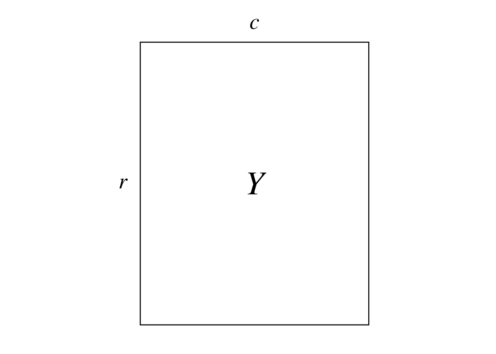
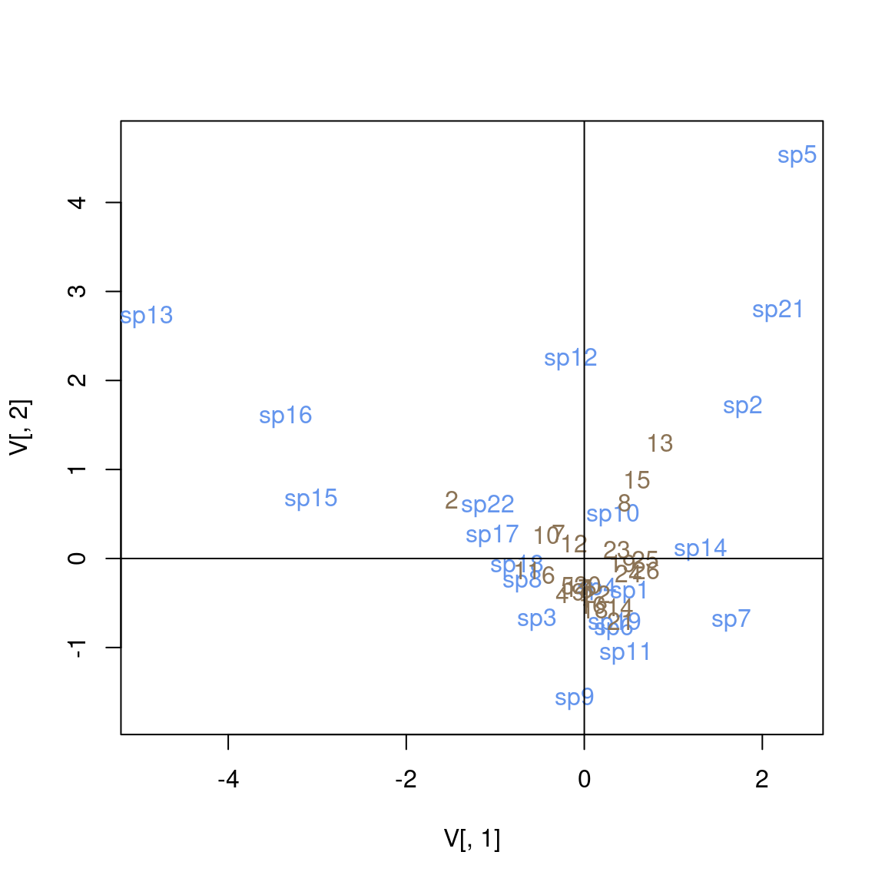
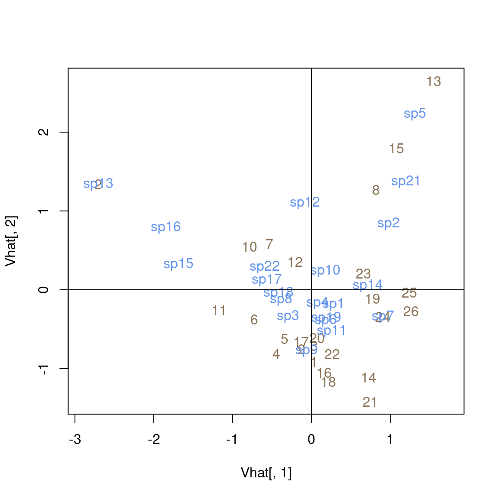
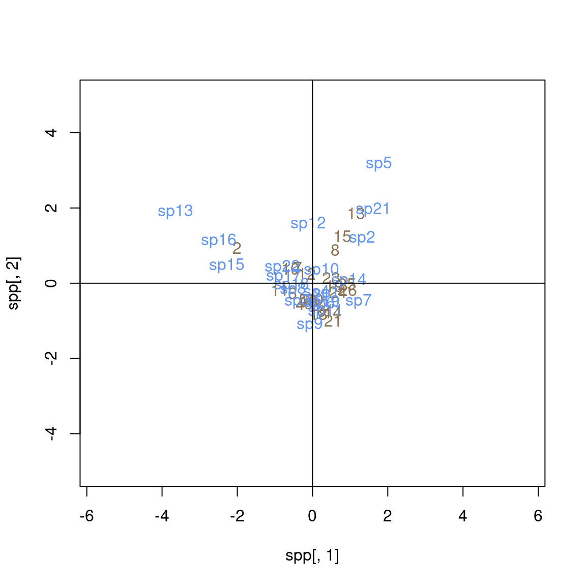

Code
# Paths
library(here)
# Multivariate analysis
library(ade4)
library(adegraphics)
# Matrix algebra
library(expm)
# Plots
library(ggplot2)
source(here("functions/plot.R"))# Paths
library(here)
# Multivariate analysis
library(ade4)
library(adegraphics)
# Matrix algebra
library(expm)
# Plots
library(ggplot2)
source(here("functions/plot.R"))The contents of this page relies heavily on (Legendre and Legendre 2012).
Correspondence analysis (CA) was developed independently by several authors between the 1930s and 1960s. It has been mainly applied to analysis of ecological data tables (species \(\times\) environment) such as the bat data we will analyze here.
Notably, Hill discovered it in 1973 with an iterative method that he called reciprocal averaging. It involves ordering species with sites initially positioned randomly, reciprocally order sites with species, etc. This iterative procedure converges to reach the same results as what is achieved with CA’s first axis.
CA is designed to analyze contingency tables (count tables) such \(Y\):

Here is a preview of \(Y\) with our example dataset:
| sp1 | sp2 | sp3 | sp4 | sp5 | sp6 | sp7 | sp8 | sp9 | sp10 | sp11 | sp12 | sp13 | sp14 | sp15 | sp16 | sp17 | sp18 | sp19 | sp21 | sp22 |
|---|---|---|---|---|---|---|---|---|---|---|---|---|---|---|---|---|---|---|---|---|
| 1 | 0 | 1 | 1 | 0 | 1 | 0 | 2 | 0 | 1 | 1 | 0 | 0 | 0 | 0 | 0 | 0 | 0 | 1 | 0 | 0 |
| 2 | 0 | 0 | 2 | 0 | 1 | 0 | 5 | 0 | 2 | 0 | 2 | 4 | 0 | 3 | 3 | 0 | 3 | 1 | 0 | 2 |
| 5 | 0 | 0 | 2 | 0 | 1 | 0 | 2 | 0 | 1 | 2 | 0 | 0 | 0 | 0 | 0 | 0 | 3 | 2 | 0 | 1 |
| 3 | 0 | 0 | 0 | 0 | 1 | 0 | 4 | 1 | 0 | 1 | 0 | 0 | 0 | 0 | 0 | 0 | 2 | 0 | 0 | 1 |
| 5 | 0 | 0 | 1 | 0 | 1 | 0 | 2 | 0 | 0 | 3 | 0 | 0 | 0 | 0 | 1 | 0 | 3 | 1 | 0 | 1 |
| 1 | 0 | 0 | 1 | 0 | 2 | 0 | 3 | 1 | 2 | 1 | 0 | 0 | 0 | 1 | 0 | 1 | 2 | 2 | 0 | 3 |
| 4 | 0 | 0 | 0 | 0 | 2 | 0 | 4 | 0 | 2 | 0 | 4 | 0 | 0 | 0 | 0 | 1 | 5 | 0 | 0 | 2 |
| 2 | 0 | 0 | 1 | 0 | 2 | 0 | 0 | 0 | 0 | 1 | 1 | 0 | 0 | 0 | 0 | 0 | 5 | 1 | 5 | 1 |
| 4 | 0 | 0 | 0 | 0 | 0 | 0 | 2 | 0 | 0 | 3 | 0 | 0 | 0 | 0 | 0 | 1 | 1 | 0 | 0 | 1 |
| 2 | 0 | 1 | 5 | 0 | 0 | 0 | 5 | 0 | 1 | 1 | 4 | 0 | 0 | 0 | 1 | 2 | 2 | 0 | 0 | 2 |
| 2 | 0 | 0 | 2 | 0 | 1 | 0 | 5 | 0 | 2 | 2 | 0 | 0 | 0 | 4 | 0 | 1 | 10 | 3 | 0 | 1 |
| 4 | 0 | 0 | 0 | 0 | 1 | 0 | 4 | 0 | 2 | 2 | 4 | 0 | 0 | 0 | 0 | 2 | 1 | 2 | 0 | 1 |
| 5 | 5 | 0 | 0 | 1 | 1 | 0 | 1 | 0 | 3 | 0 | 5 | 0 | 0 | 0 | 0 | 0 | 0 | 1 | 5 | 1 |
| 4 | 0 | 0 | 1 | 0 | 2 | 0 | 0 | 0 | 1 | 2 | 0 | 0 | 0 | 0 | 0 | 0 | 0 | 2 | 0 | 0 |
| 3 | 0 | 0 | 0 | 1 | 0 | 0 | 0 | 0 | 3 | 0 | 1 | 0 | 0 | 0 | 0 | 0 | 0 | 0 | 0 | 0 |
| 3 | 0 | 0 | 0 | 0 | 5 | 0 | 4 | 0 | 1 | 2 | 0 | 0 | 0 | 0 | 0 | 0 | 1 | 2 | 0 | 0 |
| 4 | 0 | 1 | 1 | 0 | 1 | 0 | 3 | 1 | 2 | 0 | 0 | 0 | 0 | 0 | 0 | 0 | 2 | 0 | 0 | 0 |
| 5 | 0 | 0 | 1 | 0 | 1 | 0 | 3 | 2 | 1 | 2 | 0 | 0 | 0 | 0 | 0 | 0 | 1 | 3 | 0 | 0 |
| 4 | 2 | 0 | 1 | 0 | 0 | 0 | 2 | 0 | 2 | 2 | 0 | 0 | 1 | 0 | 0 | 0 | 1 | 1 | 0 | 0 |
| 4 | 0 | 0 | 1 | 0 | 2 | 0 | 2 | 2 | 2 | 1 | 1 | 0 | 0 | 0 | 0 | 0 | 2 | 0 | 0 | 0 |
| 5 | 0 | 0 | 1 | 0 | 4 | 0 | 0 | 0 | 0 | 4 | 0 | 0 | 0 | 0 | 0 | 0 | 0 | 2 | 0 | 0 |
| 5 | 1 | 0 | 3 | 0 | 2 | 0 | 2 | 1 | 0 | 2 | 0 | 0 | 0 | 0 | 0 | 0 | 3 | 1 | 0 | 0 |
| 3 | 5 | 0 | 4 | 0 | 2 | 0 | 5 | 0 | 4 | 2 | 0 | 0 | 1 | 0 | 0 | 0 | 2 | 0 | 0 | 0 |
| 5 | 2 | 0 | 7 | 0 | 1 | 1 | 0 | 0 | 4 | 2 | 0 | 0 | 0 | 0 | 0 | 0 | 0 | 2 | 0 | 0 |
| 6 | 0 | 0 | 2 | 0 | 1 | 0 | 0 | 0 | 1 | 3 | 0 | 0 | 0 | 0 | 0 | 0 | 0 | 3 | 3 | 0 |
| 3 | 0 | 0 | 0 | 0 | 1 | 0 | 0 | 0 | 0 | 1 | 0 | 0 | 0 | 0 | 0 | 0 | 0 | 1 | 1 | 0 |
(r <- dim(Y)[1])[1] 26(c <- dim(Y)[2])[1] 21This table represents the abundance of different bird species (columns) at different sites (rows) in New Zealand.
More generally CA, can be used to analyze tables which are dimensionnally homogeneous and contain no negative values.
CA preserves \(\chi^2\) distances \(D\) between rows and columns of the contingency table:
\[ D(x_1, x_2) = \sqrt{\sum_{j = 1}^p \frac{1}{y_{\cdot j}/y_{\cdot \cdot}}\left(\frac{y_{1j}}{y_{1\cdot}} - \frac{y_{2j}}{y_{2\cdot}}\right)^2} \]
Where \(x_1\) and \(x_2\) represent two items of the rows/columns. \(p\) is the number of rows (if \(x_1\) and \(x_2\) are items of columns) or columns else.
\(y_{\cdot j}\) represent either:
\(y_{\cdot \cdot}\) is the sum of all individuals of the table.
\(\frac{y_{1j}}{y_{1\cdot}}\) are relative frequencies of individuals per rows (if \(x_1\) and \(x_2\) are items of the rows) or columns.
For example, we compute the \(\chi^2\) distance between sp1 and sp2:
# Get how much each site contributed to the total count of species
freq <- apply(Y, 2, FUN = function(x) x/sum(x))
# Get total number of individuals of bats in all sites
(ytot <- sum(Y))[1] 493sqrt( sum(1/(rowSums(Y)/ytot)*(freq[, "sp1"] - freq[, "sp2"])^2 ) )[1] 2.090546And between sites 1 and 2:
# Get the relative composition of species for each site
freq <- t(apply(Y, 1, FUN = function(x) x/sum(x)))
sqrt( sum(1/(colSums(Y)/ytot)*(freq["1",] - freq["2", ])^2 ) )[1] 2.563363Given a data matrix \(Y\), we “center-scale” this matrix (\(\bar{Q}\)).
We can diagonalize matrices \(\bar{Q} \bar{Q'}\) and \(\bar{Q}' \bar{Q}\).
\(U\) (\(c \times c\)) contains the loadings of the columns (species) of the contingency table.
\[ \bar{Q}' \bar{Q} = U \Lambda U^{-1} \]
\(\hat{U}\) (\(r \times c\)) contains the loadings of the rows (sites) of the contingency table.
\[ \bar{Q} \bar{Q}' = \hat{U} \Lambda \hat{U}^{-1} \]
We transform values of the contingency table \(Y\) with counts \(f_{ij}\) into proportions \(p_{ij}\):
\[ P = Y/f_{\cdot \cdot} \]
With our example data:
P <- Y/sum(Y)Then we transform values of this table into a quantity related to \(\chi^2\) values \(\bar{Q}\):
\[ \bar{Q} = [\bar{q}_{ij}] = \left[ \frac{p_{ij} - p_{i\cdot} p_{\cdot j}}{\sqrt{p_{i\cdot} p_{\cdot j}}} \right] \]
The \(\bar{q}_{ij}\) values are equal to the \(\chi\) values, a constant apart: \(\bar{q}_{ij} = \chi_{ij}/\sqrt{f_{\cdot \cdot}}\).
With our data:
# Initialize Qbar matrix
Qbar <- matrix(ncol = ncol(Y), nrow = nrow(Y))
colnames(Qbar) <- colnames(Y)
rownames(Qbar) <- rownames(Y)
for(i in 1:nrow(Y)) { # For each row
for (j in 1:ncol(Y)) { # For each column
# Do the sum
pi_ <- sum(P[i, ])
p_j <- sum(P[, j])
# Compute the transformation
Qbar[i, j] <- (P[i, j] - (pi_*p_j))/sqrt(pi_*p_j)
}
}\[ \bar{Q} = \hat{U}WU' \]
Where \(\bar{Q}\) is \(r \times c\), \(\hat{U}\) is \(r \times c\), \(W\) is a \(c \times c\) diagonal matrix (assuming \(r \geq c\); the table can be transposed to meet this condition) and \(U'\) is \(c \times c\).
Note that the last eigenvalue of this SVD will always be null (due to the centering).
sv <- svd(Qbar)
Uhat <- sv$u
W <- diag(sv$d)
U <- sv$v
Uprime <- t(U)
length(sv$d)[1] 21sv$d # Last eigenvalue is zero [1] 5.498025e-01 4.925288e-01 4.329553e-01 4.040318e-01 3.433964e-01
[6] 3.150413e-01 2.883515e-01 2.863913e-01 2.408812e-01 2.195224e-01
[11] 1.962294e-01 1.587138e-01 1.429179e-01 1.242514e-01 1.095957e-01
[16] 9.878630e-02 7.702202e-02 6.088389e-02 5.470965e-02 4.087652e-02
[21] 6.653482e-17With the SVD, we can rewrite \(\bar{Q}' \bar{Q}\):
\[ \bar{Q}' \bar{Q} = U W' \hat{U'} \hat{U} W U' \]
We have \(\hat{U}' \hat{U} = I\) (because \(\hat{U}\) is orthonormal), so:
\[ \bar{Q}' \bar{Q} = U W' W U' \]
If we rewrite \(W' W\) as \(\Lambda\), and since \(U' = U^{-1}\) (\(U\) is orthonormal), then we can write this as a diagonalization:
\[ \bar{Q}' \bar{Q} = U \Lambda U^{-1} \]
Similarly, we can rewrite \(\bar{Q} \bar{Q}'\):
\[ \bar{Q} \bar{Q}' = \hat{U} \Lambda \hat{U}^{-1} \]
With that, we wouldn’t even need the SVD in the first place (a classical diagonalization of \(\bar{Q} \bar{Q}'\)/\(\bar{Q}' \bar{Q}\) works.)
Lambda <- W %*% t(W)
lambda <- diag(Lambda)
# Diagonalize Q'Q ---
dg1 <- eigen(t(Qbar) %*% Qbar)
# Check eigenvalues
length(dg1$values)[1] 21dg1$values # Last value is zero [1] 3.022828e-01 2.425846e-01 1.874503e-01 1.632417e-01 1.179211e-01
[6] 9.925099e-02 8.314661e-02 8.202000e-02 5.802375e-02 4.819010e-02
[11] 3.850599e-02 2.519006e-02 2.042552e-02 1.543842e-02 1.201122e-02
[16] 9.758733e-03 5.932391e-03 3.706847e-03 2.993146e-03 1.670890e-03
[21] -9.451897e-18# Eigenvalues are equal to the SVD values
all((dg1$values - lambda) < 10e-10)[1] TRUE# Eigenvectors are equal to U
# dg1$vectors
# U
# The vectors are in opposite directions so we use the absolute value
all(abs(dg1$vectors[, 1:(c-1)]/U[, 1:(c-1)]) - 1 < 10e-10)[1] TRUE# Diagonalize QQ' ---
dg2 <- eigen(Qbar %*% t(Qbar))
# Check eigenvalues
length(dg2$values) # r eigenvalues[1] 26dg2$values # Last r - (c - 1) values are zero [1] 3.022828e-01 2.425846e-01 1.874503e-01 1.632417e-01 1.179211e-01
[6] 9.925099e-02 8.314661e-02 8.202000e-02 5.802375e-02 4.819010e-02
[11] 3.850599e-02 2.519006e-02 2.042552e-02 1.543842e-02 1.201122e-02
[16] 9.758733e-03 5.932391e-03 3.706847e-03 2.993146e-03 1.670890e-03
[21] 2.247433e-18 1.741751e-18 1.252738e-18 -6.541642e-18 -6.962632e-18
[26] -1.862602e-17# Eigenvalues are equal to the SVD values
# We test only the first values, the rest are zero
all((dg2$values[1:c] - lambda) < 10e-10)[1] TRUE# Eigenvectors are equal to Uhat (we test only eigenvectors for non-null eigenvalues)
all(abs(dg2$vectors[, 1:(c-1)]/Uhat[, 1:(c-1)]) - 1 < 10e-10)[1] TRUEOnce we diagonalized the stuff, there is still a question of scaling to plot them in the multivariate plane.
Columns (species) can be represented with:
Rows (sites) can be represented with:
There are several scalings used in CA, which are useful to plot both variables on the same plot (biplot).
First, the original coordinates are scaled to the square root of the margins of the proportion matrix.
To get the position of these in the multivariate space, we have to use \(\Lambda\):
Position of the columns (species) in the multivariate space (\(U\)): \(\hat{F} = V \Lambda^{1/2}\)
Position of the rows (sites) in the multivariate space (\(\hat{U}\)): \(F = \hat{V} \Lambda^{1/2}\)
Since these examples do not take into account the null eigenvalues, one column (= multivariate axis) will be discarded as it is not interpretable.
With our example, we have:
# Scale species (columns)
V <- diag(1/sqrt(colSums(P))) %*% U
dim(V)[1] 21 21# Get species coordinates in the multivariate space (columns)
Fhat <- V %*% diag(sqrt(lambda))
dim(Fhat)[1] 21 21all(Fhat[, ncol(Fhat)] < 10e-10) # The last values will be discarded (all coordinates are zero)[1] TRUE# Scale sites (rows)
Vhat <- diag(1/sqrt(rowSums(P))) %*% Uhat
dim(Vhat)[1] 26 21# Get sites coordinates in the multivariate space (rows)
F_ <- Vhat %*% diag(sqrt(lambda))
dim(F_)[1] 26 21all(F_[, ncol(F_)] < 10e-10) # The last values discarded (all coordinates are zero)[1] TRUEThese transformed coordinates that are used in the outputs of dudi.coa.
ca <- dudi.coa(Y,
nf = c-1, scannf = FALSE)
# Species (columns)
all(abs(ca$co/Fhat[, 1:(c-1)]) - 1 < 10e-10)
# Sites (rows)
all(abs(ca$li/F_[, 1:(c-1)]) - 1 < 10e-10)Now, there are different types of scalings for biplots. Below, we assume a sites x species matrix:
plot(x = V[, 1], y = V[, 2],
col = NULL,
asp = 1)
text(x = V[, 1], y = V[, 2],
label = colnames(Y),
col = params$colspp,
asp = 1)
text(x = F_[, 1], y = F_[, 2],
label = rownames(Y),
col = params$colsite,
asp = 1)
abline(h = 0)
abline(v = 0)
plot(x = Vhat[, 1], y = Vhat[, 2],
col = NULL,
asp = 1)
text(x = Vhat[, 1], y = Vhat[, 2],
label = rownames(Y),
col = params$colsite,
asp = 1)
text(x = Fhat[, 1], y = Fhat[, 2],
label = colnames(Y),
col = params$colspp,
asp = 1)
abline(h = 0)
abline(v = 0)
sites <- Vhat %*% diag(lambda^(1/4))
spp <- V %*% diag(lambda^(1/4))
plot(x = spp[, 1], y = spp[, 2],
col = NULL,
ylim = c(-5, 5),
xlim = c(-5, 5),
asp = 1)
text(x = sites[, 1], y = sites[, 2],
label = rownames(Y),
col = params$colsite,
asp = 1)
text(x = spp[, 1], y = spp[, 2],
label = colnames(Y),
col = params$colspp,
asp = 1)
abline(h = 0)
abline(v = 0)
plot(x = F_[, 1], y = F_[, 2],
col = NULL,
ylim = c(-2, 2),
xlim = c(-2.5, 1),
asp = 1)
text(x = F_[, 1], y = F_[, 2],
label = rownames(Y),
col = params$colsite,
asp = 1)
text(x = Fhat[, 1], y = Fhat[, 2],
label = colnames(Y),
col = params$colspp,
asp = 1)
abline(h = 0)
abline(v = 0)
\(V\) and \(\hat{V}\) are related with the following equation:
\[ \hat{V} \Lambda^{1/2} = D(p_{i\cdot})^{-1/2}\bar{Q}D(p_{\cdot j})^{1/2}V \]
This equation relates the ordination of rows (sites) (\(\hat{V}\)) to the ordination of columns (species) (\(V\)). The “conversion factor” is \(\Lambda^{1/2}\), which translates to \(\sqrt{\lambda_h}\) along principal axis \(h\).
Indeed, the eigenvalue \(\lambda_h\) is a measure of the correlation of the rows and columns ordinations along axis \(h\).
If species have a unimodal (bell-shaped) response along the gradient defined by the sites ordination along a given axis, then their position should be close to their niche optimum.
Depending on he position of, say, species, in the multivariate space, there are several interpretations:
Rare species are generally not very interesting because they are exceptions, not a general tendency. So some authors propose strategies to remove them, notably an iterative procedure. First do the complete CA, then remove the species seen one, twice… etc. Note the total inertia and the eigenvalues. When there is a jump, stop.
When there is a succession of species, along an hypothetical gradient, the CA may lead to an arch shape. There are techniques to detrend it, but knowing how to interpret this effect is probably more important.